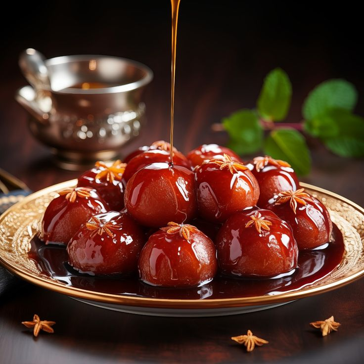
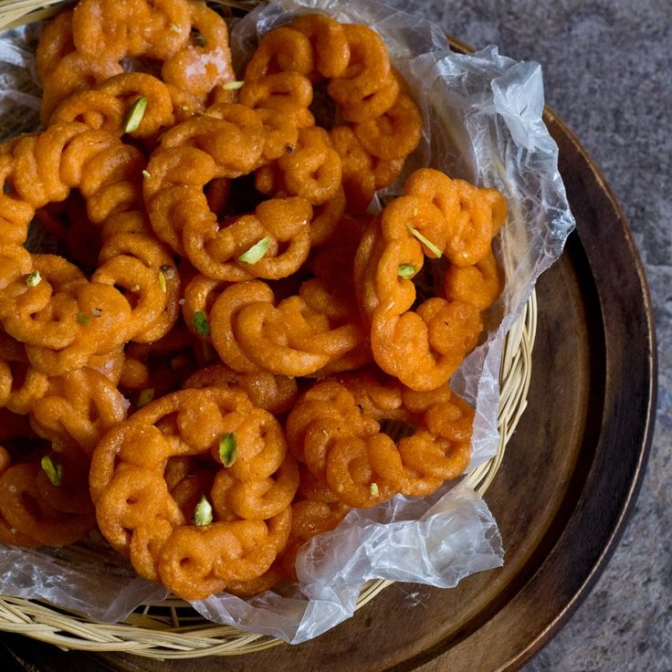
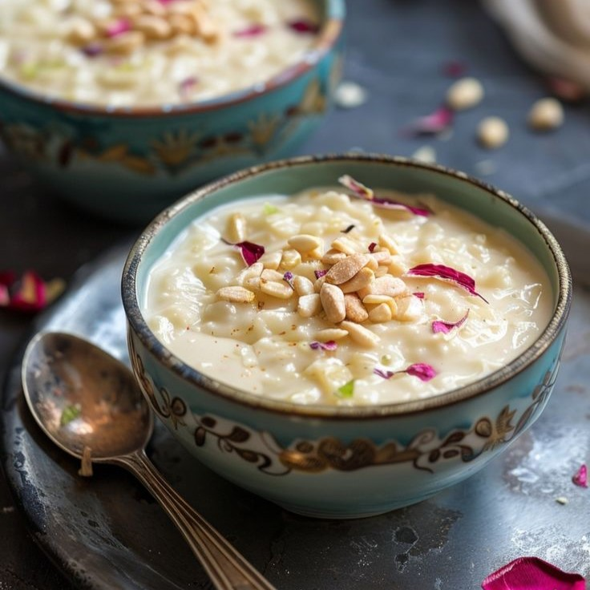

Indian Desserts

Gulab Jamun
Soft delicious berry-sized balls made with milk solids, flour, and a leavening agent. These are soaked in rose-flavored sugar syrup and enjoyed.

Imarti
A popular Indian sweet made by deep frying lentil batter which is then soaked in cardamom and rose-flavored sugar syrup.

Kheer
A pudding or porridge popular in the Indian subcontinent, usually made by boiling milk, sugar or jaggery, and rice. It is flavored with cardamom, raisins, saffron, cashews, pistachios, or almonds.

Kaju Katli
An Indian dessert prepared with cashew nuts soaked in water for a considerable period of time (usually overnight), which are then ground to a paste. Ghee, saffron, and dried fruits may also be added.